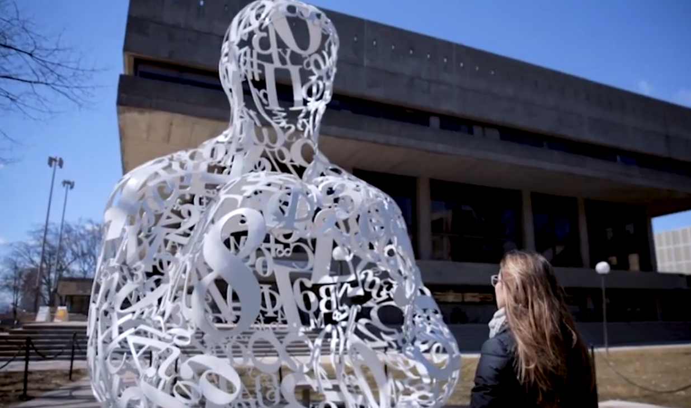
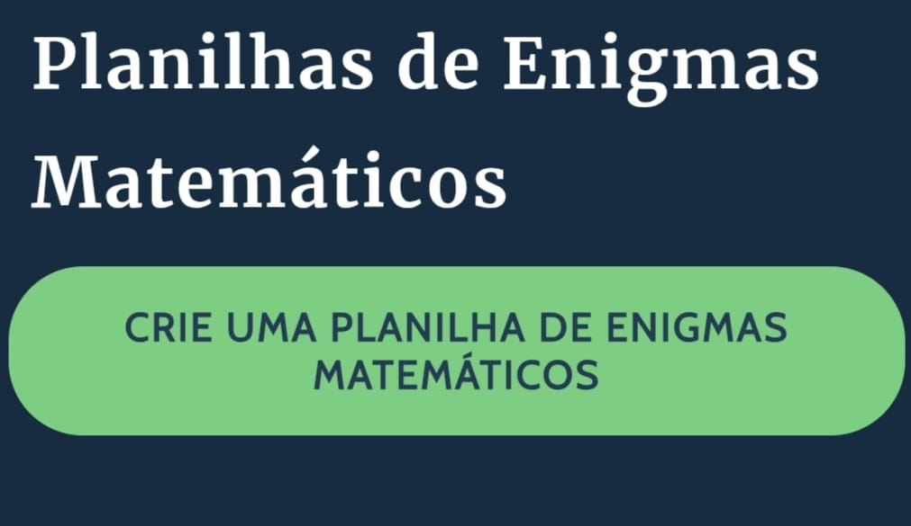

A população indígena: origens e distribuição
Todos os povos indígenas da América, desde os povos Inuit e Yupik até os da Patagônia, passando pelos povos indígenas da América do Norte, Astecas, Maias, Incas e pelos diversos povos originários do Brasil, têm suas origens na Ásia e, possivelmente, também na Oceania. Em um período ainda desconhecido, mas que pode ter começado há mais de 40 ou 50 mil anos — quando a agricultura, a cerâmica e a tecelagem ainda não existiam e a humanidade vivia no Paleolítico — tiveram início as migrações que resultaram no povoamento do continente americano. Grupos de caçadores nômades, em sucessivas ondas, migraram da Ásia Oriental para a América do Norte através do Estreito de Behring, que na época era uma ponte de terra firme e gelo. Esses grupos seguiam as manadas de grandes mamíferos e foram se espalhando lentamente pelo continente, descendo pela América Central e do Sul até chegar ao atual território brasileiro, há cerca de 30 mil anos ou mais.
Feita essa introdução, podemos voltar ao povoamento indígena da Amazônia. Ele era formado principalmente por povos pertencentes aos troncos linguísticos Aruak, Tupi e Karib. Os Aruak, que parecem ter se dispersado há mais tempo, ocuparam a metade ocidental da bacia amazônica, estendendo-se até o Orinoco e o litoral das Guianas. Os Tupi, além de ocuparem o litoral brasileiro e a bacia do Paraná, viviam também na região centro-leste da Amazônia. Já os Karib, de dispersão mais recente, se concentraram ao norte e leste da floresta e nas Guianas.
Na foz do rio Amazonas — especialmente na Ilha de Marajó e no Amapá — os arqueólogos Meggers e Evans descobriram, a partir de 1948, uma sequência de cinco fases cerâmicas que representam diferentes culturas arqueológicas, datadas desde o século X a.C. até o período da chegada dos europeus. Os povos que produziam essa cerâmica viviam em aldeias compostas por casas comunitárias, inicialmente erguidas sobre palafitas e, mais tarde, sobre plataformas de terra. A quarta dessas fases, conhecida como Marajoara, marcou o auge do desenvolvimento cultural da região. Surgiram então cerâmicas sofisticadas com pinturas geométricas, plataformas de terra elevadas para proteger as aldeias das cheias, além de objetos de adorno e figuras rituais.
Matemática dos Povos Indígenas
Curiosidades
Visite o IMPA
O Instituto de Matemática Pura e Aplicada (IMPA) é uma das principais instituições de pesquisa e ensino de matemática do Brasil. No site é possível encontrar informações sobre projetos, publicações e iniciativas voltadas à divulgação científica.
Visite Os Mistérios da Matemática
A playlist “Mistérios da Matemática”, no canal Origens NT no YouTube, reúne vídeos educativos com explicações e curiosidades que tornam o aprendizado da matemática mais simples e acessível.
Visite O Enigmas Matemáticas
O site Storyboard That oferece planilhas de enigmas matemáticos, com atividades que estimulam o raciocínio lógico e a resolução de desafios. Elas podem ser personalizadas e usadas como recurso para tornar o aprendizado mais interativo e envolvente.
Visite O Ciência Todo Dia
O canal Ciência Todo Dia, no YouTube, produz vídeos sobre ciência, tecnologia e curiosidades do universo. Com uma linguagem acessível, o canal busca aproximar o público do conhecimento científico e despertar o interesse pela pesquisa e pela aprendizagem.
Visite O Manual do Mundo

O canal Manual do Mundo, disponível no YouTube, é voltado à divulgação de experiências científicas, curiosidades e desafios práticos que despertam o interesse pela ciência e pela criatividade. Com uma abordagem educativa e divertida, o canal estimula a aprendizagem de forma leve e interativa.
Visite O Matemática
O perfil de Fábio Lennon Marchon, no Instagram, compartilha conteúdos educativos e curiosidades relacionadas à matemática e ao ensino. Com publicações voltadas à aprendizagem e à divulgação científica, o perfil busca aproximar o público dos conceitos matemáticos de forma simples e interessante.